Here are descriptions of some of the more interesting or significant changes made to the Java development tools for the Kepler release of Eclipse. They are grouped into:
See also the Eclipse Platform What's New document for changes in the Platform.
Java Editor |
|
| New 'Convert if-else to switch' Quick Assist |
The new Convert 'if-else' to 'switch' quick assist (Ctrl+1) allows you to convert an if-else statement to
an equivalent switch statement:
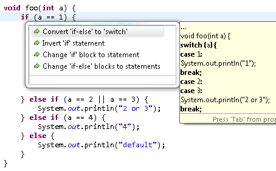 This quick assist is the reverse of the existing Convert 'switch' to 'if-else' quick assist. |
| 'Convert to if-!-return' Quick Assist |
Ever encountered a long if statement that can be safely inverted to an early return, so that you can ignore the code that follows, and make it easier to understand?
Now, you can just use a quick assist (Ctrl+1) on the if statement to do this refactoring:
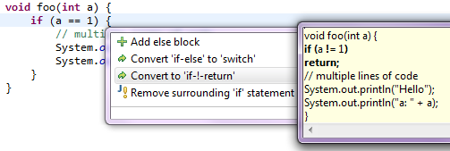 |
| Quick Fix to create 'for' loop variable |
The new Create loop variable quick fix corrects an incomplete 'for' loop
by adding the type of the loop variable:
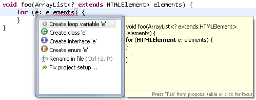 |
| Quick Assist to combine Strings |
The new Combine to single String quick assist (Ctrl+1) replaces String concatenations
with a single String literal:
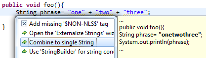 |
| Quick Assist for unused type parameters |
The Java editor now provides a quick assist (Ctrl+1) to remove or document unused type parameters:
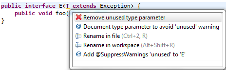 |
| Template and keyword proposals without prefix |
Content assist now proposes templates and keywords without needing a prefix first:
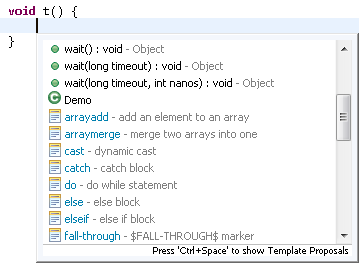 |
| Remove type arguments after content assist |
Ever encountered a case where content assist added type arguments for a generic type, but you do not want them
because you need the .class literal or you want to invoke a static method?
Now, rather than deleting all the arguments manually,
you can just delete the '<' and that will remove the entire text up to '>'.
|
| Content assist appends ';' to void methods | If a void method is selected during content assist, then a semicolon is now automatically appended at the end of the method invocation. |
| Use ';' key to insert method invocation |
Irrespective of the return type of a method, you can now use the semicolon (;) key to select any method invocation proposal
from the content assist popup. The ';' will be appended at the end of the method invocation.
|
Java Compiler |
|
| New API to indicate content assist requested on the start of a constructor |
org.eclipse.jdt.core.CompletionContext.TL_CONSTRUCTOR_START:
/**
* The completed token is the first token of a constructor
* invocation expression.
* e.g.
*
* public class X {
* public void bar() {
* new Foo| // completion occurs at |
* }
* }
*/
|
| Force Eclipse to compile (illegal) ambiguous varargs code | JDK 6 and below had a bug and considered the code below legal.
However, this bug was fixed in JDK 7 and the code now reports an ambiguous invocation error at the call site for test(..).
Eclipse Juno followed and fixed this across all compliance levels:
If you still want the above code to compile in compliance < 1.7, to mimic JDK 6 or below, you can use the system property tolerateIllegalAmbiguousVarargsInvocation to force Eclipse to tolerate such ambiguous varargs cases. This property can e.g. be set in the eclipse.ini file after the -vmargs setting: Note: With this setting, Eclipse also mimics JDK 6 and below in raising an error in other cases that are legal in both JDK 7 and Eclipse: |
| New batch compiler options | If you use the ECJ batch compiler using the command line or Ant tasks, you can now configure the following options which previously could only be set through
the Preferences > Java > Compiler > Errors/Warnings page:
For more information on using batch compiler options, please refer to Help > Java Development User Guide > Tasks > Compiling Java Code > Using the batch compiler. |
| Option to omit @Override for interface methods |
Eclipse can add @Override annotations for overriding methods:
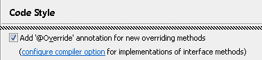
If your code uses Java 1.6 or higher, the 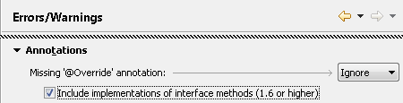 You may also want to enable the diagnostic for Missing '@Override' annotation. |
| Detection of unused type parameters |
The compiler can now detect unused type parameters:
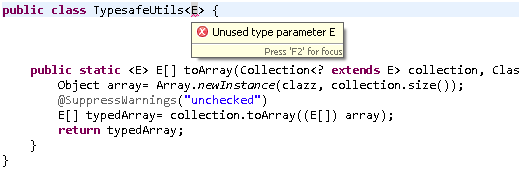 The Unused type parameter diagnostic is set to Ignore by default and can be enabled on the Java > Compiler > Errors/Warnings preference page. |
| Option to inherit null annotations |
JDT has a new option controlling how to interpret null annotations in the presence of inheritance.
This should facilitate the migration towards null annotations in projects with
mixed code ownership.
For the sake of code readability, JDT expects null annotations of an overridden
method to be repeated in overriding methods. In the following example the analysis
normally complains that 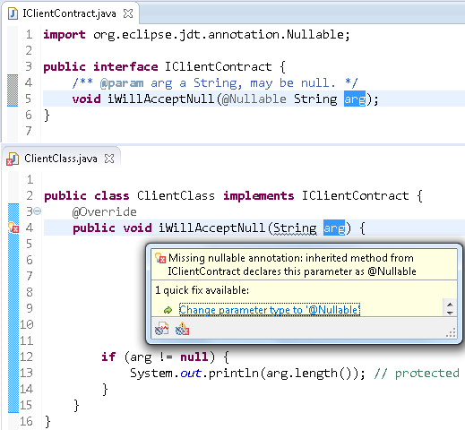 Starting with 4.3M4 this behavior can be changed by selecting the option Inherit null annotations: 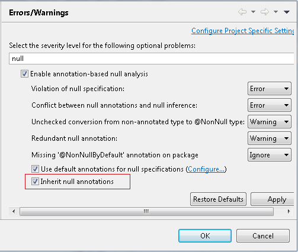 In this new mode the analysis implicitly fills in all missing annotations in overriding methods and uses the annotations from the overridden method. In the above example the error will go away, and analysis concludes that the code is actually safe, which is likely when the contract had already been defined in the javadoc comment and the implementor actually adheres to that contract. If, on the other hand, the implementation does not comply with the inherited specification, new errors will be reported as shown below: 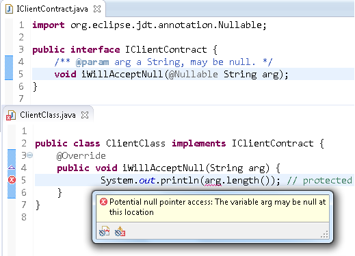 If inheritance of null annotations encounters any ambiguity or conflict the analysis falls back to requiring explicit annotations. |
| Null annotations for fields |
The annotation-based null analysis — first released with Eclipse Indigo — has been extended
to apply also to fields. If enabled, this analysis will now detect the following problems
concerning any field annotated with @NonNull:
In return to these obligations, dereferencing a If a field is marked as As a compromise between safety and convenience, the compiler can be configured to apply
"syntactic null analysis for fields".
With this option enabled, the compiler syntactically recognizes
a narrow range of code patterns where a null-check of a field is directly followed by
a dereference or an assignment to a In the following example, the check in line 12 properly protects the access in line 13, whereas
the knowledge that field This is the option that enables the syntactic analysis (under the heading Java Compiler > Errors/Warnings): 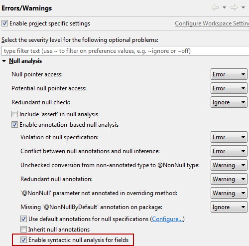 |
| Leak analysis respects well-known utilities |
JDT's analysis for resource leaks has been made aware of well known utilities
from google and apache libraries.
Generally, this analysis looks for 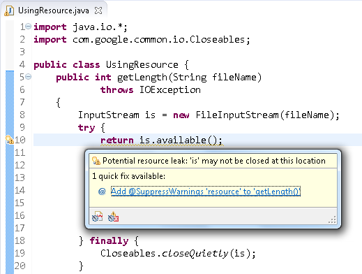 This warning is not relevant and will no longer be reported. To achieve this, JDT now hardcodes a (short) white list of functions that are known to safely close a given resource. |
Java Views and Dialogs |
|
| Pre-filling package name in creation wizards |
All the type and package creation wizards now pre-fill the package name
if a suitable package name can be suggested for the selected project or source folder:
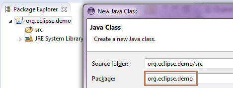 The suggested package name is the name of the project if the source folder does not contain any package and if the project name is a valid package name. In case of type creation wizards, if the source folder contains exactly one package then the name of that package is used as the suggested package name. |
| Content assist shows Javadoc in Display, Expressions and Variables view |
Content assist in the Display, Expressions and Variables view now shows Javadoc:
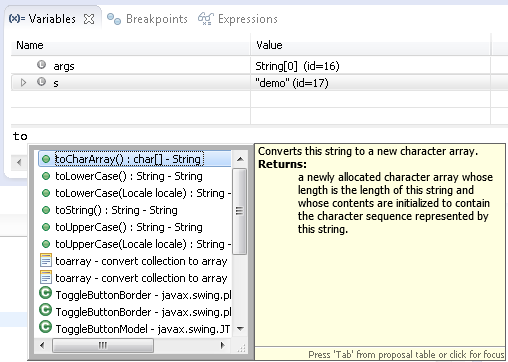 |
| Javadoc view resolves enclosing method call and keeps last target |
The Javadoc and Declaration views now try to find the enclosing method call
if the selection or caret position doesn't resolve to a valid Java element:
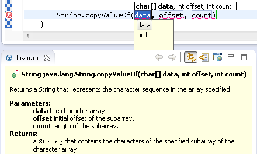 Furthermore, they keep the last resolved target element even if no new target can be resolved. |
| Support for package Javadoc in Javadoc hover and view |
The Javadoc hover and view now display package Javadoc from either the
package-info.java or the package.html file:
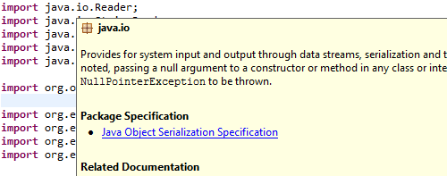 |
| Package names are linked in Javadoc hover and view |
You can now click individual package names displayed in the header of the Javadoc hover or the Javadoc view to see the package Javadoc:
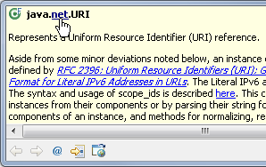 |
| Javadoc and Declaration view indicate when out of sync |
The Javadoc and Declaration view now indicate when their content is no longer in sync with the current selection:
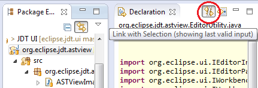 |
Debug |
|
| Improved evaluation of generics while debugging | Significant improvements have been made in the debug evaluation engine to support the use of generics. This impacts the use of conditional breakpoints, the display view, the expressions view, and the inspect/display/execute actions. Previously, evaluations acting on classes with generics would sometimes encounter compilation errors. |
| API to contribute location information for non-standard JRE / JDK libraries |
JDT Debug now provides an extension point org.eclipse.jdt.launching.libraryLocationResolvers
that you can use to contribute location information for non-standard JRE / JDK libraries. For example,
this extension point can be used to provide Javadoc and source locations for JARs in the ext location
of a JRE.
Extenders must provide an implementation of |
| XML DOM logical structures |
JDT now provides a default logical structure for XML DOMs, which can be used during debugging to view the children and attributes of a node as simple arrays:
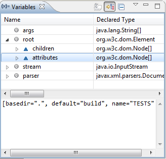 |
JUnit |
|
| Only one JUnit (4.11) |
The org.junit bundle has been updated to
JUnit 4.11.
At the same time, our good old friend org.junit_3.8.2 has been retired, and the org.junit4 compatibility bundle
has also been removed. Your Note that JUnit 4 still contains the JUnit 3 APIs. If you need org.junit_3.8.2 back for whatever reason, you can still get it from Orbit. |
| JUnit test templates |
The JUnit test templates have been renamed to show the JUnit 4 template before the JUnit 3 template:
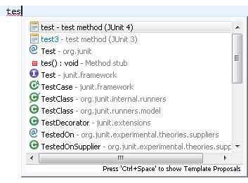 |
| JUnit view shows assumption failures |
The JUnit view now counts @Ignored tests and tests that didn't meet
an assumption as "skipped' tests. The skipped tests also got new icons, and
tests with an assumption failure no longer get the 'passed' checkmark:
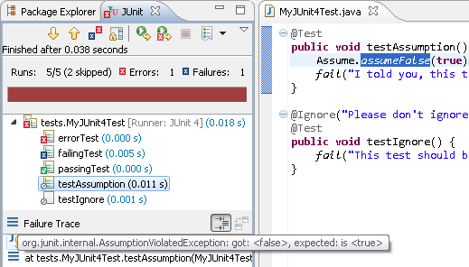 |